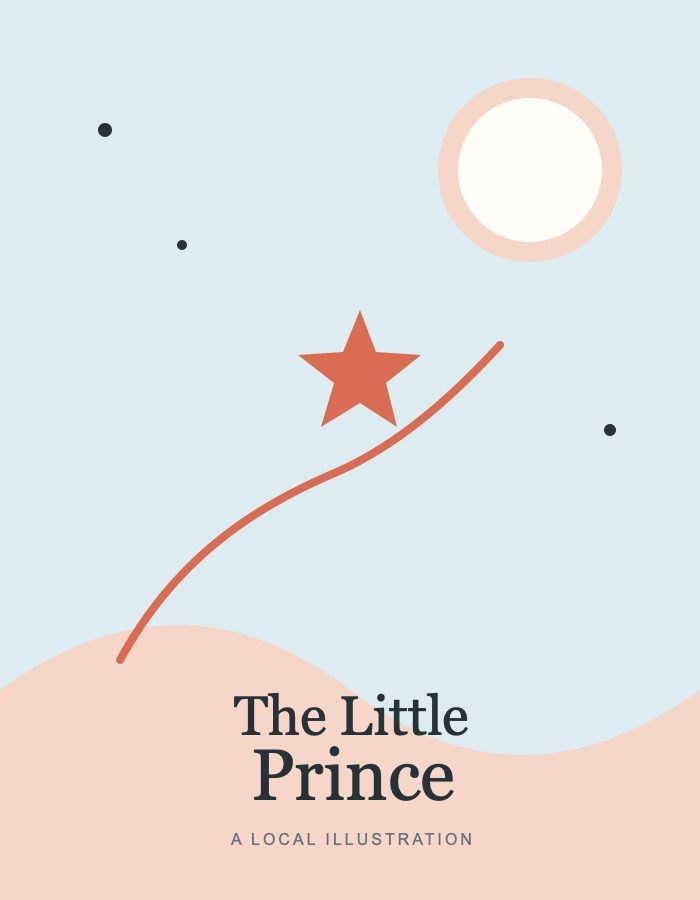

“It is only with the heart that one can see rightly; what is essential is invisible to the eye.”
“It is the time you have wasted for your rose that makes your rose so important.”
Reference passage from Antoine de Saint-Exupéry’s The Little Prince.

Assignment 1
A reflection on friendship, responsibility, and the things that are invisible to the eye.
“It is only with the heart that one can see rightly; what is essential is invisible to the eye.”
“It is the time you have wasted for your rose that makes your rose so important.”
Reference passage from Antoine de Saint-Exupéry’s The Little Prince.